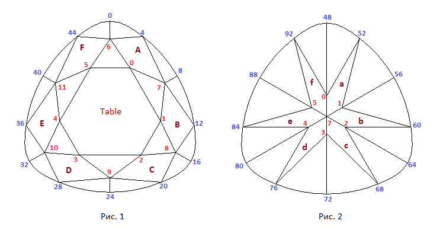
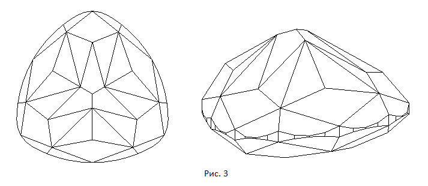
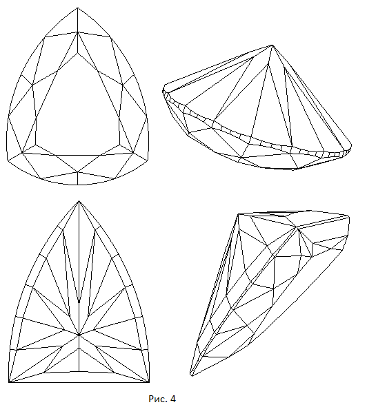

В данном разделе мы создадим модель огранки, которая называется триллиант. В качестве рундиста этой огранки используется рассмотренный в прошлой главе рундист треугольной "подушки".
По ссылке CushionTrilliant A - Light Dispersion можно увидеть эту огранку отображенную при помощи кубических карт. Нажав на приведенной по ссылке странице кнопку Inverse можно увидеть огранку на черном фоне.
Схематичные изображения короны и павильона огранки, а также нумерация вершин показаны на рисунках 1 и 2. Рисунок 1 отображает вид огранки когда наблюдатель находится снаружи модели и смотрит на корону сверху. На рисунке 2 наблюдатель смотрит на павильон сверху как если бы он находился внутри модели.
var lw = 1.0; // отношение длины огранки к ее ширине // Рундист var r = 0.06; // толщина рундиста var rs = 0.2; // радиус сопрягающих дуг var angle = 60*DEGREE; // угол задающий положение границ сегментов на линии рундиста // Корона var beta = 35*DEGREE; // угол короны var t = 0.6; // размер площадки var dSquare = 0.0001; // задает положение вершин короны в горизонтальной плоскости // Павильон var angle_pav = 50*DEGREE; // угол павильона var hPavFacet = 0.50; // глубина нижних вершин фасет павильона // Калетта var culetX = 0.00001; // смещение калетты по оси OX var culetY = 0.00001; // смещение калетты по оси OY
Расчет координат вершин рундиста рассматривался в предыдущей главе. Построение короны и павильона в основном подобно этим построениям в огранке бриллиант. Основные части исходного текста расчета координат вершин короны и павильона приведено ниже:
...........................................................................
...........................................................................
// Конструируем корону
var r_tan_beta = 0.5 * Math.tan(beta); // beta - угол наклона граней короны
var H1 = r/2; // уровень верхней части рундиста
var H2 = -r/2; // уровень нижней части рундиста
// точки короны пропорциональны точкам рундиста относительно upPoint (это следует
// из предположения, что все грани пересекаются в одной точке)
var upPoint = new Point3D(0.0, 0.0, H1 + r_tan_beta);
for ( i = 0; i < 6; i++ )
{
var dir = new Vector3D(girdle[i*8+4][0] - upPoint[0],
girdle[i*8+4][1] - upPoint[1],
girdle[i*8+4][2] - upPoint[2]);
// Вектор dir нельзя нормировать !
crown[i] = new Point3D(upPoint[0] + t * dir[0],
upPoint[1] + t * dir[1],
upPoint[2] + t * dir[2]);
}
// Находим точки пересечения основных граней
// короны между собой на уровне рундиста.
// Сначала создание шести прямых касательных к рундисту
var lines = [];
for ( i = 0; i < 6; i++ )
{
var dir = new Vector2D(girdle2[4+i*8+1][0] - girdle2[4+i*8-1][0],
girdle2[4+i*8+1][1] - girdle2[4+i*8-1][1]);
dir.Normer();
var ln = new Line2D();
ln.CreateLineVectorPoint(dir, new Point2D(girdle2[4+i*8][0],
girdle2[4+i*8][1]));
lines[i] = ln;
}
// Точки пересечения касательных к рундисту прямых между собой
var g2 = [];
for ( i = 0; i < 5; i++ )
{
g2[i+1] = lines[i].IntersectionTwoLines(lines[i+1]);
}
g2[0] = lines[0].IntersectionTwoLines(lines[5]);
// Точки звезды (вершины короны) пропорциональны точкам g2 относительно upPoint
// Коэффициент пропорциональности m находим по следующей формуле
var m = (1 + SQRT2) / 2 * t;
if ( dSquare <= 0 )
m = m + dSquare * (m - 1 + t);
else
m = m + dSquare * (1 - m);
// Координаты вершин звезды
for ( i = 0; i < 6; i++ )
{
var dir = new Vector3D( g2[i][0] - upPoint[0], g2[i][1] - upPoint[1], H1 - upPoint[2] );
var pt = new Point3D( upPoint[0] + m * dir[0], upPoint[1] + m * dir[1], upPoint[2] + m * dir[2] );
crown[i+6] = pt;
}
......................................................................................
......................................................................................
// Конструируем павильон
pavil[6] = new Point3D();
pavil[6][0] = culetX;
pavil[6][1] = culetY;
pavil[6][2] = - 0.5 * Math.tan(angle_pav)- r/2;
// Находим точки пересечения основных граней
// павильона между собой на уровне рундиста.
// На самом деле это те же самые точки из массива g2,
// которые мы определили при построении короны.
// Поэтому при построении короны воспользуемся значениями
// из этого массива.
for (i = 0; i < 6; i++)
{
var dir = new Vector3D(pavil[6][0] - g2[i][0], pavil[6][1] - g2[i][1], pavil[6][2] + r/2);
// dir.normer();
pavil[i] = new Point3D();
pavil[i][0] = pavil[6][0] - (1 - hPavFacet) * dir[0];
pavil[i][1] = pavil[6][1] - (1 - hPavFacet) * dir[1];
pavil[i][2] = pavil[6][2] - (1 - hPavFacet) * dir[2];
}
...........................................................
По ссылке Cushion Trilliant B - Light Dispersion можно увидеть еще один подобный триллиант но с павильоном более сложной формы. На рисунке 3 показано изображение этой огранки.
 Кроме огранок триллиант построенных на основе рундиста подушка существуют триллианты с более простым рундистом. Некоторые из них показаны на рисунке 4 и по ссылкам триллиант и щит